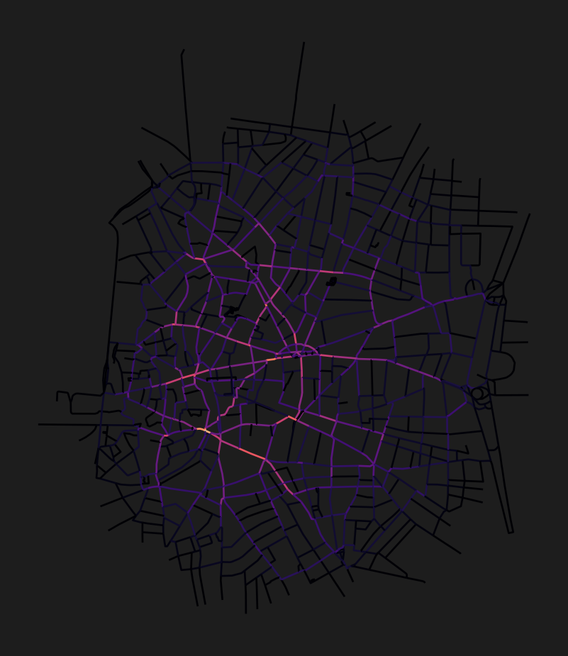

Set quiet mode (optional — reduces logging output)
import os
os.environ["CITYSEER_QUIET_MODE"] = "1"This page bridges the Python fundamentals from Python 101 with the practical Cityseer Recipes. It introduces the core concepts and walks through a minimal end-to-end workflow.
If you are already familiar with cityseer and want to jump into specific analyses, head directly to the Recipes.
Every cityseer analysis follows the same pattern:
networkx MultiGraph (from OSM, a file, or another library).NetworkStructure — a high-performance Rust data structure that cityseer uses internally for computation.GeoDataFrame, ready for plotting, export, or further analysis.By default, a street network is a primal graph: intersections are nodes and streets are edges. This is the representation you get from most data sources.
cityseer can convert a primal graph into a dual graph, where the representation is inverted: streets become nodes and intersections become edges. This means metrics are expressed per street segment rather than per intersection, which is usually more intuitive for urban analysis because the outputs can be visualised on street segment geometries. It also corresponds more naturally with the idea of simplest path centralities using angular distances from street to street.
Primal graph Dual graph
(intersections = nodes) (streets = nodes)
A ——— B AB
| | → / \
C ——— D AC BD
\ /
CDWorking with the dual representation is recommended for centrality analysis. See nx_to_dual in the API docs.
From the latest version, angular centrality measures require the dual graph. Use graphs.nx_to_dual to convert your primal graph before computing angular centralities.
The network_structure_from_nx function converts a networkx graph into three objects:
GeoDataFrame — stores node coordinates and, after computation, the metric results.GeoDataFrame — stores edge geometries and properties.NetworkStructure — the internal Rust data structure used by all metric functions.The NetworkStructure can be reused across multiple metric computations as long as the network does not change.
Most cityseer functions accept a distances parameter specifying network distance thresholds (in metres). You can compute multiple thresholds at once. See the distance thresholds table for common choices and their real-world meaning.
Alternatively, use the minutes parameter to specify walking time thresholds (converted internally to metres at a default walking speed of ~80m/min).
cityseer adds result columns to the nodes GeoDataFrame using a naming convention:
| Pattern | Example | Meaning |
|---|---|---|
cc_{metric}_{distance} |
cc_betweenness_800 |
Metric centrality: betweenness at 800m |
cc_{metric}_{distance}_ang |
cc_harmonic_500_ang |
Angular centrality: harmonic closeness at 500m |
cc_{landuse}_{distance}_nw |
cc_restaurant_400_nw |
Accessibility: unweighted count of restaurants within 400m |
cc_{landuse}_{distance}_wt |
cc_restaurant_400_wt |
Accessibility: distance-weighted count (nearer = higher weight) |
cc_{landuse}_nearest_max_{distance} |
cc_restaurant_nearest_max_800 |
Accessibility: distance to nearest restaurant (max search 800m) |
cc_{stat}_{column}_{distance} |
cc_mean_height_400 |
Statistics: mean of height column within 400m |
The cc_ prefix stands for “cityseer computed.” For centrality, the _ang suffix indicates angular (simplest-path) analysis; its absence indicates metric (shortest-path) analysis. For accessibility, _nw is the raw count and _wt applies a distance decay so that nearer features contribute more.
Here is a complete cityseer workflow in under 20 lines. It downloads a street network, computes betweenness centrality, and plots the result.
import matplotlib.pyplot as plt
from cityseer.metrics import networks
from cityseer.tools import graphs, io
# 1. Define area of interest and download network
poly_wgs, _ = io.buffered_point_poly(-3.7038, 40.4168, 1000)
G = io.osm_graph_from_poly(poly_wgs)
# 2. Convert to dual graph (recommended) and prepare data structures
G_dual = graphs.nx_to_dual(G)
nodes_gdf, edges_gdf, network_structure = io.network_structure_from_nx(G_dual)
# 3. Compute centrality at 500m, 1000m, and 2000m
nodes_gdf = networks.node_centrality_shortest(
network_structure=network_structure,
nodes_gdf=nodes_gdf,
distances=[500, 1000, 2000],
)
# 4. Plot betweenness centrality at 2000m
fig, ax = plt.subplots(1, 1, figsize=(8, 6), facecolor="#1d1d1d")
nodes_gdf.plot(
ax=ax,
column="cc_betweenness_1000",
cmap="magma",
linewidth=1,
)
ax.axis(False)WARNING:cityseer.tools.io:Unsuccessful OSM API request response, trying again...
INFO:cityseer.tools.graphs:Generating interpolated edge geometries.
WARNING:cityseer.tools.util:The to_crs_code parameter 4326 is not a projected CRS
INFO:cityseer.tools.io:Converting networkX graph to CRS code 32630.
WARNING:cityseer.tools.util:The to_crs_code parameter 4326 is not a projected CRS
INFO:cityseer.tools.io:Processing node x, y coordinates.
INFO:cityseer.tools.io:Processing edge geom coordinates, if present.
INFO:cityseer.tools.graphs:Removing filler nodes.
INFO:cityseer.tools.util:Creating edges STR tree.
INFO:cityseer.tools.graphs:Removing filler nodes.
INFO:cityseer.tools.graphs:Removing dangling nodes.
INFO:cityseer.tools.graphs:Removing filler nodes.
INFO:cityseer.tools.util:Creating edges STR tree.
INFO:cityseer.tools.graphs:Splitting opposing edges.
INFO:cityseer.tools.graphs:Squashing opposing nodes
INFO:cityseer.tools.graphs:Merging parallel edges within buffer of 25.
INFO:cityseer.tools.util:Creating edges STR tree.
INFO:cityseer.tools.graphs:Splitting opposing edges.
INFO:cityseer.tools.graphs:Squashing opposing nodes
INFO:cityseer.tools.graphs:Merging parallel edges within buffer of 25.
INFO:cityseer.tools.util:Creating edges STR tree.
INFO:cityseer.tools.graphs:Splitting opposing edges.
INFO:cityseer.tools.graphs:Squashing opposing nodes
INFO:cityseer.tools.graphs:Merging parallel edges within buffer of 25.
INFO:cityseer.tools.util:Creating edges STR tree.
INFO:cityseer.tools.graphs:Splitting opposing edges.
INFO:cityseer.tools.graphs:Squashing opposing nodes
INFO:cityseer.tools.graphs:Merging parallel edges within buffer of 25.
INFO:cityseer.tools.util:Creating nodes STR tree
INFO:cityseer.tools.graphs:Consolidating nodes.
INFO:cityseer.tools.graphs:Merging parallel edges within buffer of 25.
INFO:cityseer.tools.graphs:Removing filler nodes.
INFO:cityseer.tools.util:Creating nodes STR tree
INFO:cityseer.tools.graphs:Consolidating nodes.
INFO:cityseer.tools.graphs:Merging parallel edges within buffer of 25.
INFO:cityseer.tools.graphs:Removing filler nodes.
INFO:cityseer.tools.util:Creating nodes STR tree
INFO:cityseer.tools.graphs:Consolidating nodes.
INFO:cityseer.tools.graphs:Merging parallel edges within buffer of 25.
INFO:cityseer.tools.graphs:Removing filler nodes.
INFO:cityseer.tools.util:Creating nodes STR tree
INFO:cityseer.tools.graphs:Consolidating nodes.
INFO:cityseer.tools.graphs:Merging parallel edges within buffer of 25.
INFO:cityseer.tools.graphs:Removing filler nodes.
INFO:cityseer.tools.util:Creating nodes STR tree
INFO:cityseer.tools.util:Creating edges STR tree.
INFO:cityseer.tools.graphs:Snapping gapped endings.
INFO:cityseer.tools.util:Creating edges STR tree.
INFO:cityseer.tools.graphs:Splitting opposing edges.
INFO:cityseer.tools.graphs:Merging parallel edges within buffer of 25.
INFO:cityseer.tools.graphs:Removing dangling nodes.
INFO:cityseer.tools.graphs:Removing filler nodes.
INFO:cityseer.tools.util:Creating edges STR tree.
INFO:cityseer.tools.graphs:Splitting opposing edges.
INFO:cityseer.tools.graphs:Squashing opposing nodes
INFO:cityseer.tools.graphs:Merging parallel edges within buffer of 25.
INFO:cityseer.tools.util:Creating nodes STR tree
INFO:cityseer.tools.graphs:Consolidating nodes.
INFO:cityseer.tools.graphs:Merging parallel edges within buffer of 25.
INFO:cityseer.tools.util:Creating edges STR tree.
INFO:cityseer.tools.graphs:Splitting opposing edges.
INFO:cityseer.tools.graphs:Squashing opposing nodes
INFO:cityseer.tools.graphs:Merging parallel edges within buffer of 25.
INFO:cityseer.tools.util:Creating nodes STR tree
INFO:cityseer.tools.graphs:Consolidating nodes.
INFO:cityseer.tools.graphs:Merging parallel edges within buffer of 25.
INFO:cityseer.tools.graphs:Removing filler nodes.
INFO:cityseer.tools.graphs:Merging parallel edges within buffer of 50.
INFO:cityseer.tools.graphs:Ironing edges.
INFO:cityseer.tools.graphs:Merging parallel edges within buffer of 1.
INFO:cityseer.tools.graphs:Removing dangling nodes.
INFO:cityseer.tools.graphs:Removing filler nodes.
INFO:cityseer.tools.graphs:Converting graph to dual.
INFO:cityseer.tools.graphs:Preparing dual nodes
INFO:cityseer.tools.graphs:Preparing dual edges (splitting and welding geoms)
INFO:cityseer.tools.io:Preparing node and edge arrays from networkX graph.
INFO:cityseer.graph:Edge R-tree built successfully with 3354 items.
INFO:cityseer.metrics.networks:Computing node centrality (shortest).
INFO:cityseer.metrics.networks: Full: 500m, 1000m, 2000m(np.float64(439069.9073235071),
np.float64(441447.3570016397),
np.float64(4472987.0367495585),
np.float64(4475752.01592385))
The osm_graph_from_poly function produces log messages showing the network cleaning steps. These are normal and can be safely ignored. To suppress them, add import logging; logging.getLogger("cityseer").setLevel(logging.WARNING) before calling the function.
cityseer requires a projected coordinate reference system (CRS) with metre units for accurate distance calculations. A geographic CRS like WGS 84 (EPSG:4326) uses degrees and will produce incorrect results.
How to choose the right CRS for your study area:
io.buffered_point_poly or io.osm_graph_from_poly with default settings, cityseer automatically selects an appropriate UTM zone based on the input coordinates. This is usually sufficient.to_crs_code parameter. Common choices include UTM zones (search your city at epsg.io) or regional projections like EPSG:3035 (Europe), EPSG:27700 (Great Britain), or EPSG:2154 (France).gdf.to_crs(epsg=...) before passing it to cityseer.Forgetting to use a projected CRS. If distances or areas seem wildly wrong, check that your data is not in EPSG:4326 (WGS 84). Reproject to a projected CRS with metre units.
Edge rolloff near boundaries. If metric values drop sharply at the edges of your study area, you need a network buffer. Download a network larger than your study area, then set boundary nodes to live=False so that metrics are only computed for nodes inside the study area. See the Edge Rolloff section and the live nodes example.
Confusing _nw and _wt accessibility columns. The _nw (non-weighted) columns give a raw count of reachable features. The _wt (weighted) columns apply distance decay, so nearer features contribute more. Use _wt when proximity matters (e.g., walkability studies); use _nw when presence alone matters (e.g., counting all parks within reach).
With these concepts in hand, you are ready to explore the recipes: